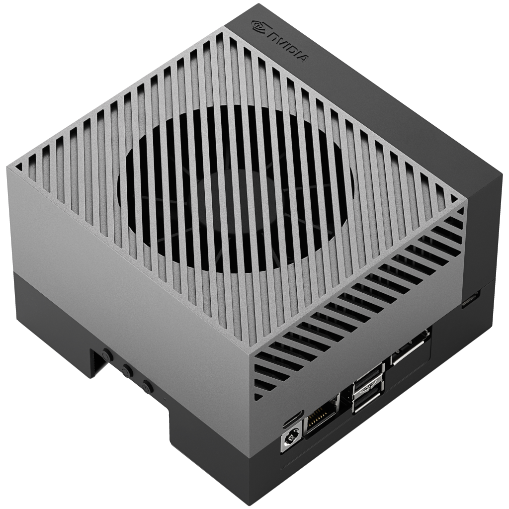
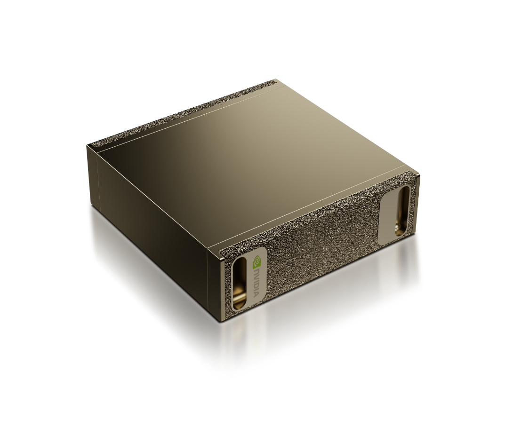
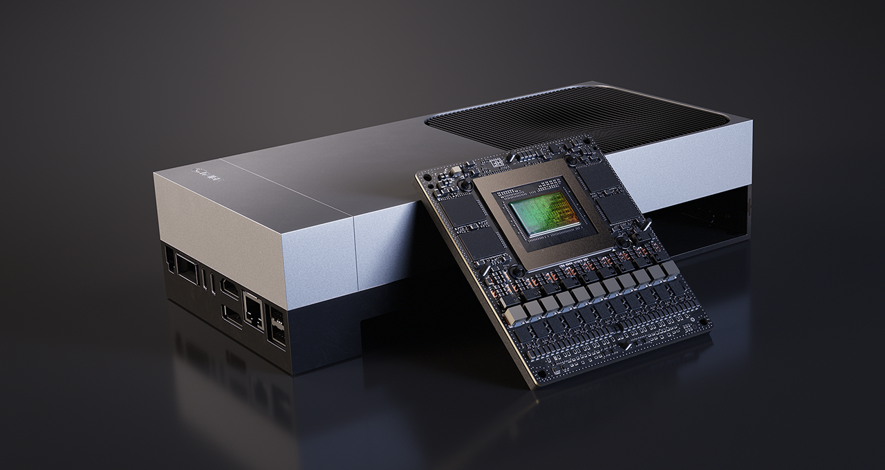
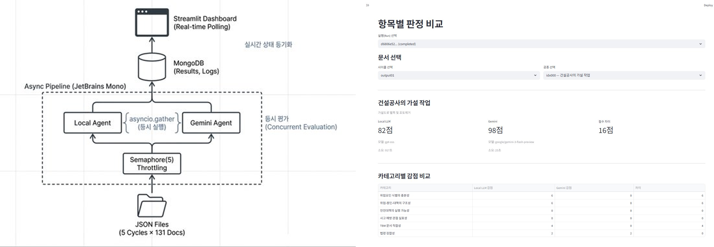
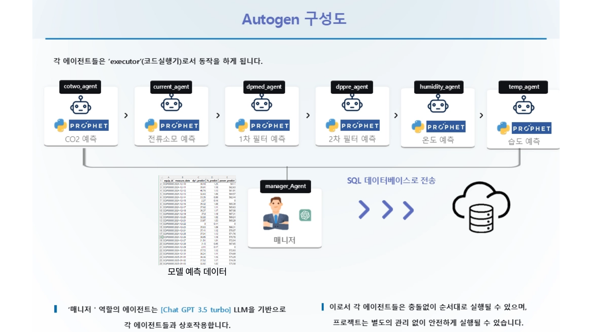
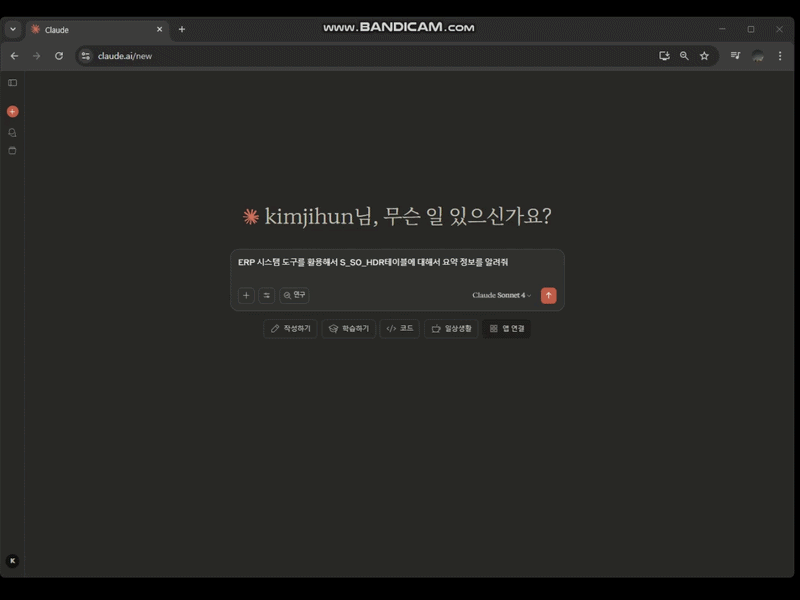
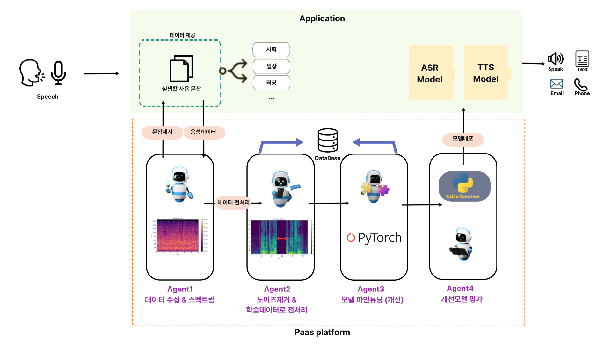
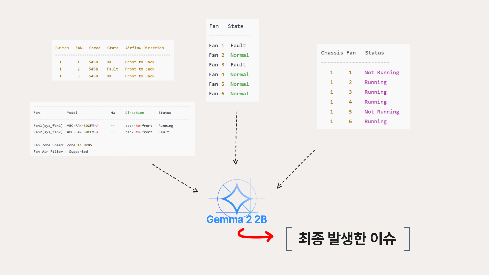

김지훈.
2000.03.31
멀티에이전트 AI시스템을 개발하여
복잡한 문제를 해결합니다.

Edge Device
Jetson AGX Orin
64GB Ampere

Edge Device
DGX Spark
128GB Grace Blackwell

Edge Device
Jetson Thor
128GB Grace Blackwell
 TRT-LLMTRT-LLM
TRT-LLMTRT-LLMProjects
2026
'26
Teams 파일 AI 검색 에이전트
2026.01수 백개 이상의 Teams 채널에서 자연어로 파일을 찾고 내용까지 분석하는 AI 시스템
Microsoft Graph API 기반 하이브리드 병렬 검색(KQL + Drive API)과 VLM/LLM 2단계 심층 분석으로, 수 백개 이상의 Teams 채널에서 파일명이 아닌 내용 기반으로 문서를 찾아 추천합니다.
6단계 에이전트 파이프라인을 설계하여 단일 에이전트 순차처리와 비교하여 기준 검색 속도 12배 개선(6분→90초), VLM 토큰 90% 절감을 달성했습니다.
서버사이드 인덱싱API를 적극 사용하여 추가적인 유지보수 없이 지속가능한 시스템을 구축했습니다.
오픈소스 Edge LLM 환경만을 활용하여 적은 리소스로 높은 사용성을 확보한것이 특징입니다.
6단계 에이전트 파이프라인을 설계하여 단일 에이전트 순차처리와 비교하여 기준 검색 속도 12배 개선(6분→90초), VLM 토큰 90% 절감을 달성했습니다.
서버사이드 인덱싱API를 적극 사용하여 추가적인 유지보수 없이 지속가능한 시스템을 구축했습니다.
오픈소스 Edge LLM 환경만을 활용하여 적은 리소스로 높은 사용성을 확보한것이 특징입니다.
LLM
DGX Spark
GPT-OSS 120B
VLM
Jetson AGX Orin
Qwen3-VL 30B A3B
2025
'25
TBM 문서 AI 이중 평가 시스템
2025.12건설 안전 문서 신뢰도를 두 LLM이 병렬 교차 검증하는 LLM-as-a-judge 자동화 파이프라인

건설 현장 TBM(Tool Box Meeting) 문서의 신뢰도를 Local LLM과 Gemini가 50개 항목 체크리스트로 독립 교차 평가합니다.
이중 병렬화 시스템으로 5사이클×131문서를 자동 처리하며, LLM 추론능력에 의존하지않고 결정론적 파이프라인을 구축하여 안정적인 결과를 보장하는것이 특징입니다.
오픈소스 LLM과 폐쇄형 API모델의 추론 능력 차이와 비용을 고려하여 에이전트간 작업 분기를 진행한것이 가장 큰 특징입니다.
이중 병렬화 시스템으로 5사이클×131문서를 자동 처리하며, LLM 추론능력에 의존하지않고 결정론적 파이프라인을 구축하여 안정적인 결과를 보장하는것이 특징입니다.
오픈소스 LLM과 폐쇄형 API모델의 추론 능력 차이와 비용을 고려하여 에이전트간 작업 분기를 진행한것이 가장 큰 특징입니다.
LLM
DGX Spark
GPT-OSS 120B
'25
K3s 기반 스마트 건설 안전 SaaS 플랫폼
2025.08Bash 스크립트 원클릭으로 App·LLM Serving·Vector DB를 K3s 엣지 환경에 자동 배포하는 건설 안전 SaaS
"컨소시엄형 기술개발 지원사업"의 핵심 AI 아키텍처를 설계하고, App·LLM Serving·Vector DB를 독립 모듈로 구성하여 K3s(경량 Kubernetes) 환경으로 구축했습니다.
Bash 스크립트 한 번의 실행으로 전체 PaaS 스택이 엣지 디바이스(Jetson AGX Orin)에 자동 배포되도록 설계하여, 현장 인프라 구성의 진입 장벽을 최소화했습니다.
Bash 스크립트 한 번의 실행으로 전체 PaaS 스택이 엣지 디바이스(Jetson AGX Orin)에 자동 배포되도록 설계하여, 현장 인프라 구성의 진입 장벽을 최소화했습니다.
Edge
Jetson AGX Orin
K3s Cluster
'25
ERP 부정적발 Text-to-SQL 시스템
2025.01GraphRAG로 ERP 테이블 관계를 지식 그래프화하여 자연어 부정적발 SQL을 자동 생성하는 멀티에이전트 시스템
ERP 수백 개 테이블의 관계를 GraphRAG 지식 그래프로 매핑하고, AutoGen 멀티에이전트가 자연어 질의를 MS-SQL로 변환하여 부정거래를 탐지합니다. 사용자 질의 분석, SQL쿼리 작성, 값 검증등 4개의 에이전트가 협력하여 작업을 수행합니다.
공인인증기관 성능 평가 진행(정확도 90%+), 저작권 등록으로 기술 독창성을 공식 인정받았으며, 국내 ERP 분야 GraphRAG 도입 선도 사례입니다.
공인인증기관 성능 평가 진행(정확도 90%+), 저작권 등록으로 기술 독창성을 공식 인정받았으며, 국내 ERP 분야 GraphRAG 도입 선도 사례입니다.
2024
'24
작업현장 VCBO(Vision Conditional Based Operation) PoC진행
2024.12VLM 모델 기반 Edge 디바이스 실시간 위험 상황 감지 PoC
VLM 모델을 활용하여 Edge 디바이스 환경에서 실시간 위험 상황 감지 PoC를 진행하였습니다.
NVIDIA DeepStream 컨테이너를 적극 활용하였고, 컨테이너 기반 비전 파이프라인을 구축하여 VLM 추론 능력을 적극적으로 활용한 대표 사례입니다.
NVIDIA DeepStream 컨테이너를 적극 활용하였고, 컨테이너 기반 비전 파이프라인을 구축하여 VLM 추론 능력을 적극적으로 활용한 대표 사례입니다.
Edge
Jetson AGX Orin
NVIDIA VILA 3B
'24
멀티 에이전트 CBO(Condition Based Operation)
2024.07AutoGen 멀티에이전트 기반 IoT 센서 데이터 분석 및 공조 설비 자동 최적화 AI 솔루션

시설 내 다양한 IoT 센서(온도, 습도, CO2, 차압 등) 데이터를 수집·분석하여, 건물과 제조 시설의 공조 설비 운전을 자동으로 최적화하는 AI 솔루션입니다.
AutoGen 멀티에이전트 프레임워크를 기반으로, 각 에이전트는 Executor 역할을 수행하며 중앙의 LLM 에이전트(GPT-3.5 Turbo)가 센서 값을 종합 분석합니다.
오류 발생 시 개발자에게 자동으로 폴백하는 안전 로직을 내장하여, 현장 무인 운영 환경에서도 신뢰성을 확보했습니다.
AutoGen 멀티에이전트 프레임워크를 기반으로, 각 에이전트는 Executor 역할을 수행하며 중앙의 LLM 에이전트(GPT-3.5 Turbo)가 센서 값을 종합 분석합니다.
오류 발생 시 개발자에게 자동으로 폴백하는 안전 로직을 내장하여, 현장 무인 운영 환경에서도 신뢰성을 확보했습니다.
Edge
Jetson AGX Orin
OpenAI GPT-3.5 Turbo
Activities
2025
Visual RAG · 2025.07
Visual RAG 파이프라인: VLM 기반 건설 공정 자동 분류 시스템
3-Stage 하이브리드 파이프라인으로 1,000+개 건설 공정을 자동 분류
기존에는 1,000여 개의 건설작업분류 체계에 대해 VLM에게 직접 분류를 요구했으나, 선택지가 과도하여 낮은 정확도·환각(Hallucination)·일관성 부재 문제가 발생했습니다.
이를 해결하기 위해 생성(Generation)과 검색(Retrieval)을 분리·결합하는 3-Stage 하이브리드 파이프라인을 설계했습니다. Phase 1에서 VLM이 현장 이미지를 자연어로 묘사하고, Phase 2에서 해당 텍스트를 벡터화하여 Qdrant DB에서 1,000+개 공정을 5~15개 후보로 압축한 뒤, Phase 3에서 원본 이미지와 후보군을 VLM에 재입력하여 최종 1건을 확정하고 선택 근거와 확신도를 함께 출력합니다.
후보 리스트 내에서만 선택하도록 강제하여 환각을 원천 차단하고, 새로운 공정 추가 시에도 벡터 DB 데이터만 수정하면 되어 모델 재학습 없이 확장이 가능합니다.
본 시스템은 컨소시엄형 과제의 핵심 비전 분류 시스템으로 채택되어 실제 현장에서 활용되고 있습니다.
이를 해결하기 위해 생성(Generation)과 검색(Retrieval)을 분리·결합하는 3-Stage 하이브리드 파이프라인을 설계했습니다. Phase 1에서 VLM이 현장 이미지를 자연어로 묘사하고, Phase 2에서 해당 텍스트를 벡터화하여 Qdrant DB에서 1,000+개 공정을 5~15개 후보로 압축한 뒤, Phase 3에서 원본 이미지와 후보군을 VLM에 재입력하여 최종 1건을 확정하고 선택 근거와 확신도를 함께 출력합니다.
후보 리스트 내에서만 선택하도록 강제하여 환각을 원천 차단하고, 새로운 공정 추가 시에도 벡터 DB 데이터만 수정하면 되어 모델 재학습 없이 확장이 가능합니다.
본 시스템은 컨소시엄형 과제의 핵심 비전 분류 시스템으로 채택되어 실제 현장에서 활용되고 있습니다.
Edge Device
Jetson AGX Orin
Cosmos Reason1 8B
Text-to-SQL · 2025.06
Text-To-SQL시스템 MCP 연동
LightRAG 지식그래프 + MCP 프로토콜로 자연어 SQL 변환 시스템 구축

MSSQL 데이터베이스의 테이블 메타데이터를 LightRAG 지식그래프(246노드/252관계)로 임베딩하고, MCP(Model Context Protocol)를 통해 Claude Desktop과 연동하여 자연어 질의를 SQL로 변환하는 시스템을 구축했습니다.
AWS EC2에 LightRAG API 서버를 배포하고, Streamable HTTP 기반 mcp-proxy를 통해 웹 서비스까지 확장했습니다.
그래프+벡터 하이브리드 검색으로 테이블 간 JOIN 관계를 정확히 추론하며, SQL 지식 없이도 자연어만으로 데이터 조회가 가능합니다.
AWS EC2에 LightRAG API 서버를 배포하고, Streamable HTTP 기반 mcp-proxy를 통해 웹 서비스까지 확장했습니다.
그래프+벡터 하이브리드 검색으로 테이블 간 JOIN 관계를 정확히 추론하며, SQL 지식 없이도 자연어만으로 데이터 조회가 가능합니다.
Proposal · 2025.04
AI 도입 제안서 작성
2025 사회적 약자를 위한 기술 개발 사업 서류 제안 통과

"2025 사회적 약자를 위한 기술 개발 사업"에 구음장애인을 위한 맞춤형 음성 인식 플랫폼 'VoiceLink'를 기획하고 제안했습니다.
NVIDIA Conformer-CTC 등 범용 ASR 모델을 기반으로 개별 사용자의 발성 패턴에 맞춰 자동 파인튜닝되는 고정확도 인식 모델을 설계하고, 멀티 에이전트 시스템을 통해 데이터 수집부터 모델 학습까지 전 과정을 자동화했습니다.
Qualcomm AI Hub 기반 모바일 추론 환경을 활용한 초개인화 시스템을 기획하여, 높은 경쟁률을 뚫고 서류 심사를 통과했습니다.
제안서 요약본 보기
NVIDIA Conformer-CTC 등 범용 ASR 모델을 기반으로 개별 사용자의 발성 패턴에 맞춰 자동 파인튜닝되는 고정확도 인식 모델을 설계하고, 멀티 에이전트 시스템을 통해 데이터 수집부터 모델 학습까지 전 과정을 자동화했습니다.
Qualcomm AI Hub 기반 모바일 추론 환경을 활용한 초개인화 시스템을 기획하여, 높은 경쟁률을 뚫고 서류 심사를 통과했습니다.
Distributed Inference · 2025.04
RPC 분산 추론 서버 구축
Jetson AGX Orin 클러스터로 Qwen3-235B 모델 분산 추론 환경 구축
llama.cpp의 RPC Backend를 활용하여 Jetson AGX Orin 2대를 네트워크로 연결하고, 단일 기기(~60GB 메모리)로는 로드할 수 없는 88GB 규모의 Qwen3-235B(Q2_K_XL) 모델을 TCP 기반 RPC 프로토콜로 분산 추론하는 환경을 구축했습니다.
Docker 컨테이너 기반으로 마스터-워커 구조를 구성하고, 각 노드의 가용 메모리에 비례하여 모델 가중치와 KV 캐시가 자동 분배됩니다.
Docker 컨테이너 기반으로 마스터-워커 구조를 구성하고, 각 노드의 가용 메모리에 비례하여 모델 가중치와 KV 캐시가 자동 분배됩니다.
Master
Jetson AGX Orin
Qwen3-235B
Worker
Jetson AGX Orin
RPC Server
2024
Edge AI · 2024.08
Cisco 장비 로그 분석용 QLoRA 파인튜닝 프로젝트
Gemma2 2B QLoRA 파인튜닝으로 Cisco 장비 로그 분석 자동화 — Jetson Edge 배포

범용 LLM은 Cisco 장비의 도메인 특화 로그(FAN, Power, Temperature, CPU 등)를 정확히 해석하지 못했고, 보안 정책상 외부 API 사용이 불가능한 사내 환경에서 로컬 구동 가능한 경량 모델이 필요했습니다.
이를 해결하기 위해 약 3,300건의 실제 장비 로그·시스템 에러 메시지 데이터셋을 직접 구축하고, Google Gemma-2 2B 모델에 QLoRA 기법을 적용하여 파인튜닝했습니다.
초기 HuggingFace PEFT 환경에서 Unsloth 프레임워크로 전환해 메모리 효율 30% 절감과 학습 안정성을 확보했으며, LoRA 파라미터를 최적화하여 로그 분석 정확도 72%→89%(+17%p), 오류 감지율 54%→81%(+27%p)를 달성했습니다.
학습된 모델은 GGUF로 변환 후 Ollama 기반으로 Jetson AGX Orin에 배포하여, 외부 의존 없이 엣지 환경에서 실시간 로그 분석이 가능한 시스템을 구현했습니다.
오픈소스 LLM 커뮤니티(HuggingFace, Unsloth)를 최대한 활용한 강화학습 사례로, Jetson Edge 서버에 적용한 사내 AI 자동화 적용 사례입니다.
학습한 모델 (HuggingFace)
제작 데이터셋 (HuggingFace)
데이터셋 출처 (Cisco 공식 문서)
이를 해결하기 위해 약 3,300건의 실제 장비 로그·시스템 에러 메시지 데이터셋을 직접 구축하고, Google Gemma-2 2B 모델에 QLoRA 기법을 적용하여 파인튜닝했습니다.
초기 HuggingFace PEFT 환경에서 Unsloth 프레임워크로 전환해 메모리 효율 30% 절감과 학습 안정성을 확보했으며, LoRA 파라미터를 최적화하여 로그 분석 정확도 72%→89%(+17%p), 오류 감지율 54%→81%(+27%p)를 달성했습니다.
학습된 모델은 GGUF로 변환 후 Ollama 기반으로 Jetson AGX Orin에 배포하여, 외부 의존 없이 엣지 환경에서 실시간 로그 분석이 가능한 시스템을 구현했습니다.
오픈소스 LLM 커뮤니티(HuggingFace, Unsloth)를 최대한 활용한 강화학습 사례로, Jetson Edge 서버에 적용한 사내 AI 자동화 적용 사례입니다.
Edge Device
Jetson AGX Orin
Gemma2 2B QLoRA